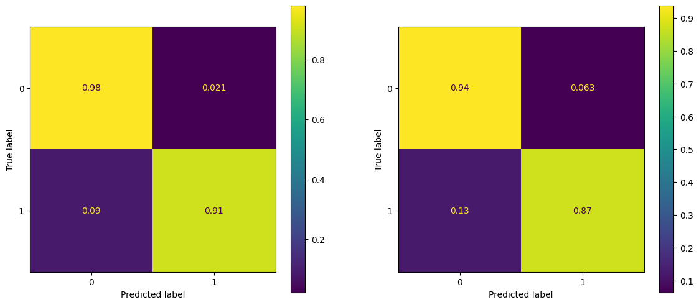
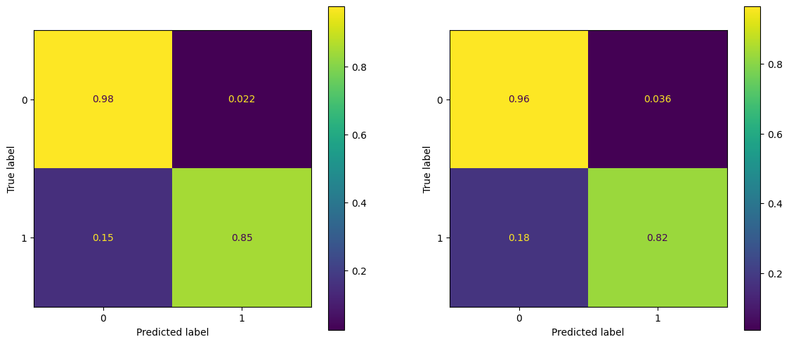
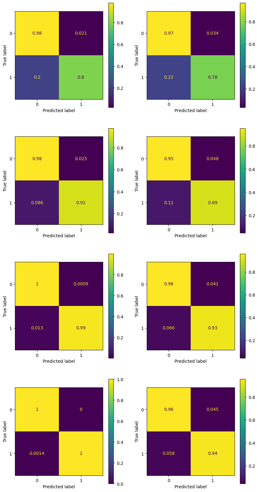
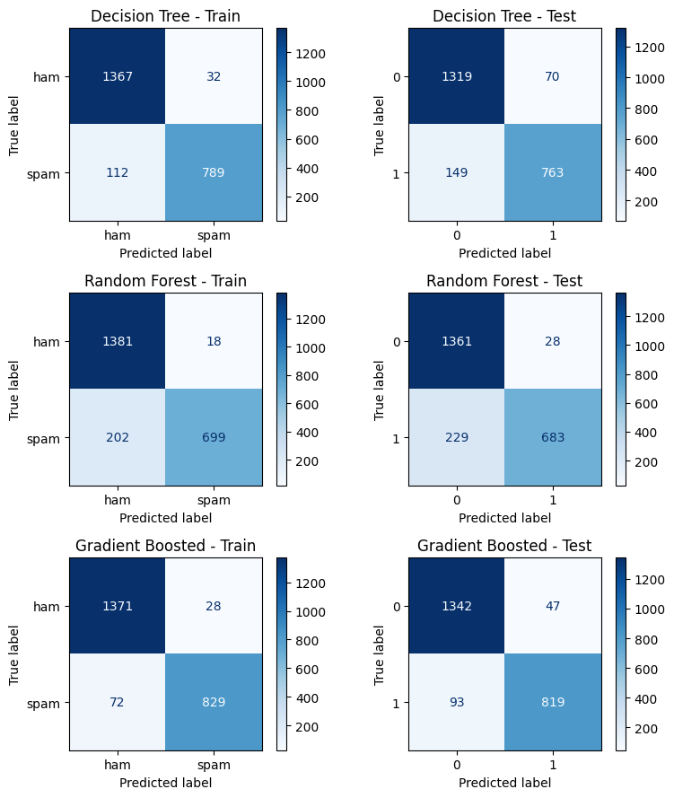
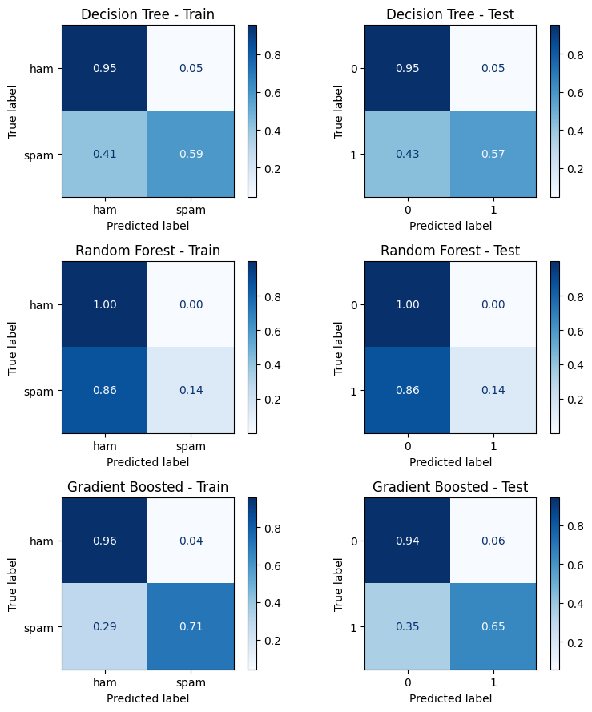

11. Forests and Trees#
Ensemble methods combine predictions across multiple models to improve prediction.
weak learners - simple models that predict slightly better than random guessing
strong learners - more complex models that predict significantly better than chance
11.1. Random Forests (RandomForestClassifier)#
A random forest creates numerous trees in parallel (at the same time). Each tree is relatively shallow, sometimes only a single node (called a stump).
To make a prediction, a sample is processed by each tree, each tree makes a prediction, and the majority vote wins. But what makes the trees in the forest different from each other?
In fitting, diversity of trees is created using two methods: feature selection and bagging.
11.1.1. Random feature subsets#
Each tree only gets a subset of the features. For example, in a random forest deciding whether or not you should buy a car, one tree might make a prediction based on [‘reliability’, ‘feul economy’, ‘price’], while another uses [‘top speed’, ‘interior room’, ‘cost to repair’], and another uses [‘resale value’, ‘feul economy’, ‘value of standard tech’] and another…
11.1.2. Bagging (Bootstrap aggregating)#
Bootstrapping is a method for creating new data sets by sampling existing data sets. In bootstrapping, you select samples randomly and allow a sample to be selected multiple times (called sampling with replacement).
Bagging is a method that uses bootstrapping to create different training sets for each tree, and then aggregating the results.
11.1.3. Why it works?#
The idea is that no one tree will be great, but they’ll all make different mistakes. But there’ll be more overlap in correct guesses than in mistakes. So for any given sample, the majority vote is more likely to be correct than any one tree.
11.2. Gradient Boosted Trees#
Whereas Random Forests fit trees in parallel and every tree gets an equal vote, Boosted trees create trees sequentially, each new tree focusing on the shortcomings of the previous. And at the voting stage, some trees get more say than others.
There are many flavors of Boosted trees: AdaBoost, XGBoost, CatBoost
They all work a little differently, but here’s an outline of AdaBoost as an example:
11.2.1. AdaBoost (Adaptive Boosting) ( GradientBoostingClassifier)#
In AdaBoost, a tree comprises only one decision node; this kind of tree is called a stump. In each iteration, a new stump is created that splits the data based on a different condition. As the algorithm iterates, it keeps track of:
Sample Weight - each iteration, the algorithm focuses more on misclassified samples.
A sample that is classified correctly is down-weighted. We get this right, don’t spend more energy on this case.
A sample that is classified incorrectly is up-weighted. We get this wrong, focus on this case.
Tree Influence - how much say a tree will have in the final vote. Trees that do better at classifying get more say.
A tree that is 50% correct gets no say. This tree is just guessing
A tree that is >50% gets a positive vote (0 to infinity). A tree that is 100% correct gets infinite vote! Listen to that tree!
A tree that is <50% gets a negative vote (0 to -infinity). A tree that is 0% correct gets a -infinite vote! Do the opposite of that tree!
The AdaBoost process:
Start with all the samples each counts the same.
Same as in a decision tree, pick a question that splits the data to minimize Gini Impurity.
Sum up sample weights for mis-classified samples and calculate Tree Influence.
Assign new weights to samples, increasing weights on mistakes and decreasing weights on correct classifications.
Create new stump, and repeat 2-5 until classification error is below some threshold you choose.
When you predict, you feed the sample through all the stumps and each votes according to their influence.
11.2.2. Example: Spam email prediction#
# !pip install ucimlrepo
from ucimlrepo import fetch_ucirepo
import pandas as pd
# fetch dataset
spambase = fetch_ucirepo(id=94)
# data (as pandas dataframes)
X = spambase.data.features
Y = spambase.data.targets
# to make y a compatible shape for sklearn models
y = Y['Class']
labels = ['ham', 'spam']
# metadata
# print(spambase.metadata)
# variable information
print(spambase.variables)
name role type demographic \
0 word_freq_make Feature Continuous None
1 word_freq_address Feature Continuous None
2 word_freq_all Feature Continuous None
3 word_freq_3d Feature Continuous None
4 word_freq_our Feature Continuous None
5 word_freq_over Feature Continuous None
6 word_freq_remove Feature Continuous None
7 word_freq_internet Feature Continuous None
8 word_freq_order Feature Continuous None
9 word_freq_mail Feature Continuous None
10 word_freq_receive Feature Continuous None
11 word_freq_will Feature Continuous None
12 word_freq_people Feature Continuous None
13 word_freq_report Feature Continuous None
14 word_freq_addresses Feature Continuous None
15 word_freq_free Feature Continuous None
16 word_freq_business Feature Continuous None
17 word_freq_email Feature Continuous None
18 word_freq_you Feature Continuous None
19 word_freq_credit Feature Continuous None
20 word_freq_your Feature Continuous None
21 word_freq_font Feature Continuous None
22 word_freq_000 Feature Continuous None
23 word_freq_money Feature Continuous None
24 word_freq_hp Feature Continuous None
25 word_freq_hpl Feature Continuous None
26 word_freq_george Feature Continuous None
27 word_freq_650 Feature Continuous None
28 word_freq_lab Feature Continuous None
29 word_freq_labs Feature Continuous None
30 word_freq_telnet Feature Continuous None
31 word_freq_857 Feature Continuous None
32 word_freq_data Feature Continuous None
33 word_freq_415 Feature Continuous None
34 word_freq_85 Feature Continuous None
35 word_freq_technology Feature Continuous None
36 word_freq_1999 Feature Continuous None
37 word_freq_parts Feature Continuous None
38 word_freq_pm Feature Continuous None
39 word_freq_direct Feature Continuous None
40 word_freq_cs Feature Continuous None
41 word_freq_meeting Feature Continuous None
42 word_freq_original Feature Continuous None
43 word_freq_project Feature Continuous None
44 word_freq_re Feature Continuous None
45 word_freq_edu Feature Continuous None
46 word_freq_table Feature Continuous None
47 word_freq_conference Feature Continuous None
48 char_freq_; Feature Continuous None
49 char_freq_( Feature Continuous None
50 char_freq_[ Feature Continuous None
51 char_freq_! Feature Continuous None
52 char_freq_$ Feature Continuous None
53 char_freq_# Feature Continuous None
54 capital_run_length_average Feature Continuous None
55 capital_run_length_longest Feature Continuous None
56 capital_run_length_total Feature Continuous None
57 Class Target Binary None
description units missing_values
0 None None no
1 None None no
2 None None no
3 None None no
4 None None no
5 None None no
6 None None no
7 None None no
8 None None no
9 None None no
10 None None no
11 None None no
12 None None no
13 None None no
14 None None no
15 None None no
16 None None no
17 None None no
18 None None no
19 None None no
20 None None no
21 None None no
22 None None no
23 None None no
24 None None no
25 None None no
26 None None no
27 None None no
28 None None no
29 None None no
30 None None no
31 None None no
32 None None no
33 None None no
34 None None no
35 None None no
36 None None no
37 None None no
38 None None no
39 None None no
40 None None no
41 None None no
42 None None no
43 None None no
44 None None no
45 None None no
46 None None no
47 None None no
48 None None no
49 None None no
50 None None no
51 None None no
52 None None no
53 None None no
54 None None no
55 None None no
56 None None no
57 spam (1) or not spam (0) None no
X.head()
| word_freq_make | word_freq_address | word_freq_all | word_freq_3d | word_freq_our | word_freq_over | word_freq_remove | word_freq_internet | word_freq_order | word_freq_mail | ... | word_freq_conference | char_freq_; | char_freq_( | char_freq_[ | char_freq_! | char_freq_$ | char_freq_# | capital_run_length_average | capital_run_length_longest | capital_run_length_total | |
|---|---|---|---|---|---|---|---|---|---|---|---|---|---|---|---|---|---|---|---|---|---|
| 0 | 0.00 | 0.64 | 0.64 | 0.0 | 0.32 | 0.00 | 0.00 | 0.00 | 0.00 | 0.00 | ... | 0.0 | 0.00 | 0.000 | 0.0 | 0.778 | 0.000 | 0.000 | 3.756 | 61 | 278 |
| 1 | 0.21 | 0.28 | 0.50 | 0.0 | 0.14 | 0.28 | 0.21 | 0.07 | 0.00 | 0.94 | ... | 0.0 | 0.00 | 0.132 | 0.0 | 0.372 | 0.180 | 0.048 | 5.114 | 101 | 1028 |
| 2 | 0.06 | 0.00 | 0.71 | 0.0 | 1.23 | 0.19 | 0.19 | 0.12 | 0.64 | 0.25 | ... | 0.0 | 0.01 | 0.143 | 0.0 | 0.276 | 0.184 | 0.010 | 9.821 | 485 | 2259 |
| 3 | 0.00 | 0.00 | 0.00 | 0.0 | 0.63 | 0.00 | 0.31 | 0.63 | 0.31 | 0.63 | ... | 0.0 | 0.00 | 0.137 | 0.0 | 0.137 | 0.000 | 0.000 | 3.537 | 40 | 191 |
| 4 | 0.00 | 0.00 | 0.00 | 0.0 | 0.63 | 0.00 | 0.31 | 0.63 | 0.31 | 0.63 | ... | 0.0 | 0.00 | 0.135 | 0.0 | 0.135 | 0.000 | 0.000 | 3.537 | 40 | 191 |
5 rows × 57 columns
from sklearn.tree import DecisionTreeClassifier
from sklearn.ensemble import RandomForestClassifier, GradientBoostingClassifier
from sklearn.model_selection import GridSearchCV, train_test_split
tree_params = {
"max_depth": [1, 4, 8]
}
grid_tree = GridSearchCV(DecisionTreeClassifier(), tree_params, cv = 5)
forest_params = {
"n_estimators":[5, 50, 500, 5000],
"max_depth": [1, 2, 4]
}
grid_forest = GridSearchCV(RandomForestClassifier(), forest_params, cv = 5)
# boosted_params = {"n_estimators" : [5, 50, 500, 5000]}
# grid_boosted = GridSearchCV(GradientBoostingClassifier(), boosted_params, cv = 5)
X_train, X_test, y_train, y_test = train_test_split(X, y, test_size = 0.2)
grid_tree.fit(X_train, y_train)
grid_forest.fit(X_train, y_train)
---------------------------------------------------------------------------
KeyboardInterrupt Traceback (most recent call last)
Cell In[6], line 4
1 X_train, X_test, y_train, y_test = train_test_split(X, y, test_size = 0.2)
3 grid_tree.fit(X_train, y_train)
----> 4 grid_forest.fit(X_train, y_train)
File ~/.pyenv/versions/3.13.1/envs/datascience/lib/python3.13/site-packages/sklearn/base.py:1365, in _fit_context.<locals>.decorator.<locals>.wrapper(estimator, *args, **kwargs)
1358 estimator._validate_params()
1360 with config_context(
1361 skip_parameter_validation=(
1362 prefer_skip_nested_validation or global_skip_validation
1363 )
1364 ):
-> 1365 return fit_method(estimator, *args, **kwargs)
File ~/.pyenv/versions/3.13.1/envs/datascience/lib/python3.13/site-packages/sklearn/model_selection/_search.py:1051, in BaseSearchCV.fit(self, X, y, **params)
1045 results = self._format_results(
1046 all_candidate_params, n_splits, all_out, all_more_results
1047 )
1049 return results
-> 1051 self._run_search(evaluate_candidates)
1053 # multimetric is determined here because in the case of a callable
1054 # self.scoring the return type is only known after calling
1055 first_test_score = all_out[0]["test_scores"]
File ~/.pyenv/versions/3.13.1/envs/datascience/lib/python3.13/site-packages/sklearn/model_selection/_search.py:1605, in GridSearchCV._run_search(self, evaluate_candidates)
1603 def _run_search(self, evaluate_candidates):
1604 """Search all candidates in param_grid"""
-> 1605 evaluate_candidates(ParameterGrid(self.param_grid))
File ~/.pyenv/versions/3.13.1/envs/datascience/lib/python3.13/site-packages/sklearn/model_selection/_search.py:997, in BaseSearchCV.fit.<locals>.evaluate_candidates(candidate_params, cv, more_results)
989 if self.verbose > 0:
990 print(
991 "Fitting {0} folds for each of {1} candidates,"
992 " totalling {2} fits".format(
993 n_splits, n_candidates, n_candidates * n_splits
994 )
995 )
--> 997 out = parallel(
998 delayed(_fit_and_score)(
999 clone(base_estimator),
1000 X,
1001 y,
1002 train=train,
1003 test=test,
1004 parameters=parameters,
1005 split_progress=(split_idx, n_splits),
1006 candidate_progress=(cand_idx, n_candidates),
1007 **fit_and_score_kwargs,
1008 )
1009 for (cand_idx, parameters), (split_idx, (train, test)) in product(
1010 enumerate(candidate_params),
1011 enumerate(cv.split(X, y, **routed_params.splitter.split)),
1012 )
1013 )
1015 if len(out) < 1:
1016 raise ValueError(
1017 "No fits were performed. "
1018 "Was the CV iterator empty? "
1019 "Were there no candidates?"
1020 )
File ~/.pyenv/versions/3.13.1/envs/datascience/lib/python3.13/site-packages/sklearn/utils/parallel.py:82, in Parallel.__call__(self, iterable)
73 warning_filters = warnings.filters
74 iterable_with_config_and_warning_filters = (
75 (
76 _with_config_and_warning_filters(delayed_func, config, warning_filters),
(...) 80 for delayed_func, args, kwargs in iterable
81 )
---> 82 return super().__call__(iterable_with_config_and_warning_filters)
File ~/.pyenv/versions/3.13.1/envs/datascience/lib/python3.13/site-packages/joblib/parallel.py:1986, in Parallel.__call__(self, iterable)
1984 output = self._get_sequential_output(iterable)
1985 next(output)
-> 1986 return output if self.return_generator else list(output)
1988 # Let's create an ID that uniquely identifies the current call. If the
1989 # call is interrupted early and that the same instance is immediately
1990 # reused, this id will be used to prevent workers that were
1991 # concurrently finalizing a task from the previous call to run the
1992 # callback.
1993 with self._lock:
File ~/.pyenv/versions/3.13.1/envs/datascience/lib/python3.13/site-packages/joblib/parallel.py:1914, in Parallel._get_sequential_output(self, iterable)
1912 self.n_dispatched_batches += 1
1913 self.n_dispatched_tasks += 1
-> 1914 res = func(*args, **kwargs)
1915 self.n_completed_tasks += 1
1916 self.print_progress()
File ~/.pyenv/versions/3.13.1/envs/datascience/lib/python3.13/site-packages/sklearn/utils/parallel.py:147, in _FuncWrapper.__call__(self, *args, **kwargs)
145 with config_context(**config), warnings.catch_warnings():
146 warnings.filters = warning_filters
--> 147 return self.function(*args, **kwargs)
File ~/.pyenv/versions/3.13.1/envs/datascience/lib/python3.13/site-packages/sklearn/model_selection/_validation.py:859, in _fit_and_score(estimator, X, y, scorer, train, test, verbose, parameters, fit_params, score_params, return_train_score, return_parameters, return_n_test_samples, return_times, return_estimator, split_progress, candidate_progress, error_score)
857 estimator.fit(X_train, **fit_params)
858 else:
--> 859 estimator.fit(X_train, y_train, **fit_params)
861 except Exception:
862 # Note fit time as time until error
863 fit_time = time.time() - start_time
File ~/.pyenv/versions/3.13.1/envs/datascience/lib/python3.13/site-packages/sklearn/base.py:1365, in _fit_context.<locals>.decorator.<locals>.wrapper(estimator, *args, **kwargs)
1358 estimator._validate_params()
1360 with config_context(
1361 skip_parameter_validation=(
1362 prefer_skip_nested_validation or global_skip_validation
1363 )
1364 ):
-> 1365 return fit_method(estimator, *args, **kwargs)
File ~/.pyenv/versions/3.13.1/envs/datascience/lib/python3.13/site-packages/sklearn/ensemble/_forest.py:486, in BaseForest.fit(self, X, y, sample_weight)
475 trees = [
476 self._make_estimator(append=False, random_state=random_state)
477 for i in range(n_more_estimators)
478 ]
480 # Parallel loop: we prefer the threading backend as the Cython code
481 # for fitting the trees is internally releasing the Python GIL
482 # making threading more efficient than multiprocessing in
483 # that case. However, for joblib 0.12+ we respect any
484 # parallel_backend contexts set at a higher level,
485 # since correctness does not rely on using threads.
--> 486 trees = Parallel(
487 n_jobs=self.n_jobs,
488 verbose=self.verbose,
489 prefer="threads",
490 )(
491 delayed(_parallel_build_trees)(
492 t,
493 self.bootstrap,
494 X,
495 y,
496 sample_weight,
497 i,
498 len(trees),
499 verbose=self.verbose,
500 class_weight=self.class_weight,
501 n_samples_bootstrap=n_samples_bootstrap,
502 missing_values_in_feature_mask=missing_values_in_feature_mask,
503 )
504 for i, t in enumerate(trees)
505 )
507 # Collect newly grown trees
508 self.estimators_.extend(trees)
File ~/.pyenv/versions/3.13.1/envs/datascience/lib/python3.13/site-packages/sklearn/utils/parallel.py:82, in Parallel.__call__(self, iterable)
73 warning_filters = warnings.filters
74 iterable_with_config_and_warning_filters = (
75 (
76 _with_config_and_warning_filters(delayed_func, config, warning_filters),
(...) 80 for delayed_func, args, kwargs in iterable
81 )
---> 82 return super().__call__(iterable_with_config_and_warning_filters)
File ~/.pyenv/versions/3.13.1/envs/datascience/lib/python3.13/site-packages/joblib/parallel.py:1986, in Parallel.__call__(self, iterable)
1984 output = self._get_sequential_output(iterable)
1985 next(output)
-> 1986 return output if self.return_generator else list(output)
1988 # Let's create an ID that uniquely identifies the current call. If the
1989 # call is interrupted early and that the same instance is immediately
1990 # reused, this id will be used to prevent workers that were
1991 # concurrently finalizing a task from the previous call to run the
1992 # callback.
1993 with self._lock:
File ~/.pyenv/versions/3.13.1/envs/datascience/lib/python3.13/site-packages/joblib/parallel.py:1914, in Parallel._get_sequential_output(self, iterable)
1912 self.n_dispatched_batches += 1
1913 self.n_dispatched_tasks += 1
-> 1914 res = func(*args, **kwargs)
1915 self.n_completed_tasks += 1
1916 self.print_progress()
File ~/.pyenv/versions/3.13.1/envs/datascience/lib/python3.13/site-packages/sklearn/utils/parallel.py:147, in _FuncWrapper.__call__(self, *args, **kwargs)
145 with config_context(**config), warnings.catch_warnings():
146 warnings.filters = warning_filters
--> 147 return self.function(*args, **kwargs)
File ~/.pyenv/versions/3.13.1/envs/datascience/lib/python3.13/site-packages/sklearn/ensemble/_forest.py:188, in _parallel_build_trees(tree, bootstrap, X, y, sample_weight, tree_idx, n_trees, verbose, class_weight, n_samples_bootstrap, missing_values_in_feature_mask)
185 elif class_weight == "balanced_subsample":
186 curr_sample_weight *= compute_sample_weight("balanced", y, indices=indices)
--> 188 tree._fit(
189 X,
190 y,
191 sample_weight=curr_sample_weight,
192 check_input=False,
193 missing_values_in_feature_mask=missing_values_in_feature_mask,
194 )
195 else:
196 tree._fit(
197 X,
198 y,
(...) 201 missing_values_in_feature_mask=missing_values_in_feature_mask,
202 )
File ~/.pyenv/versions/3.13.1/envs/datascience/lib/python3.13/site-packages/sklearn/tree/_classes.py:472, in BaseDecisionTree._fit(self, X, y, sample_weight, check_input, missing_values_in_feature_mask)
461 else:
462 builder = BestFirstTreeBuilder(
463 splitter,
464 min_samples_split,
(...) 469 self.min_impurity_decrease,
470 )
--> 472 builder.build(self.tree_, X, y, sample_weight, missing_values_in_feature_mask)
474 if self.n_outputs_ == 1 and is_classifier(self):
475 self.n_classes_ = self.n_classes_[0]
KeyboardInterrupt:
tree = grid_tree.best_estimator_
forest = grid_forest.best_estimator_
tree_pred_train = tree.predict(X_train)
tree_pred_test = tree.predict(X_test)
forest_pred_train = forest.predict(X_train)
forest_pred_test = forest.predict(X_test)
import matplotlib.pyplot as plt
from sklearn.metrics import ConfusionMatrixDisplay
fig, ax = plt.subplots(1,2, figsize = (14, 6))
ConfusionMatrixDisplay.from_predictions(y_train, tree_pred_train, ax = ax[0], normalize = 'true')
ConfusionMatrixDisplay.from_predictions(y_test, tree_pred_test, ax = ax[1], normalize = 'true')
<sklearn.metrics._plot.confusion_matrix.ConfusionMatrixDisplay at 0x11c548d40>

fig, ax = plt.subplots(1,2, figsize = (14, 6))
ConfusionMatrixDisplay.from_predictions(y_train, forest_pred_train, ax = ax[0], normalize = 'true')
ConfusionMatrixDisplay.from_predictions(y_test, forest_pred_test, ax = ax[1], normalize = 'true')
<sklearn.metrics._plot.confusion_matrix.ConfusionMatrixDisplay at 0x11c40ae50>

n_estimators = [5, 50, 500, 5000]
boosted_dict = {}
for ne in n_estimators:
print(f'Training Boosted Tree with {ne} estimators')
boosted_dict[ne] = GradientBoostingClassifier(n_estimators = ne)
boosted_dict[ne].fit(X_train, y_train)
Training Boosted Tree with 5 estimators
Training Boosted Tree with 50 estimators
Training Boosted Tree with 500 estimators
Training Boosted Tree with 5000 estimators
fig, ax = plt.subplots(4, 2, figsize = (10, 20))
for k, ne in enumerate(n_estimators):
y_pred_train = boosted_dict[ne].predict(X_train)
y_pred_test = boosted_dict[ne].predict(X_test)
ConfusionMatrixDisplay.from_predictions(y_train, y_pred_train, ax = ax[k, 0], normalize = 'true')
ConfusionMatrixDisplay.from_predictions(y_test, y_pred_test, ax = ax[k, 1], normalize = 'true')
plt.show()

11.2.3. Example: Palmer Penguins#
# palmer = pd.read_csv('https://gist.githubusercontent.com/slopp/ce3b90b9168f2f921784de84fa445651/raw/4ecf3041f0ed4913e7c230758733948bc561f434/penguins.csv', index_col = 'rowid')
# palmer.dropna(axis = 0, inplace=True)
# palmer.reset_index(drop = True, inplace=True)
# features = ['bill_length_mm', 'bill_depth_mm',
# 'flipper_length_mm', 'body_mass_g']
# target = 'species'
# labels = ['Adelie', 'Chinstrap', 'Gentoo']
# X = palmer[features]
# y = palmer[target]
from sklearn.tree import DecisionTreeClassifier
from sklearn.ensemble import RandomForestClassifier, GradientBoostingClassifier
from sklearn.model_selection import GridSearchCV, train_test_split
# Split data
X_train, X_test, y_train, y_test = train_test_split(X, y, test_size=0.5, random_state=42)
Best Decision Tree params: {'max_depth': 6, 'min_samples_split': 10}
Best Random Forest params: {'max_depth': 2, 'n_estimators': 100}
Best Gradient Boosted params: {'max_depth': 2, 'n_estimators': 100}
from sklearn.metrics import confusion_matrix, ConfusionMatrixDisplay, classification_report
import matplotlib.pyplot as plt
models = [
('Decision Tree', y_tree_train, y_tree_test),
('Random Forest', y_forest_train, y_forest_test),
('Gradient Boosted', y_boosted_train, y_boosted_test)
]
fig, axes = plt.subplots(3, 2, figsize=(8, 9))
for i, (name, y_pred_train, y_pred_test) in enumerate(models):
cm_train = confusion_matrix(y_train, y_pred_train)
cm_test = confusion_matrix(y_test, y_pred_test)
disp_train = ConfusionMatrixDisplay(cm_train, display_labels=labels)
disp_test = ConfusionMatrixDisplay(cm_test)
disp_train.plot(ax=axes[i, 0], cmap='Blues', values_format='d')
axes[i, 0].set_title(f'{name} - Train')
disp_test.plot(ax=axes[i, 1], cmap='Blues', values_format='d')
axes[i, 1].set_title(f'{name} - Test')
plt.tight_layout()

import numpy as np
def display_feature_importance(model):
imps = model.feature_importances_
features = model.feature_names_in_
sort_idx = np.argsort(imps)[::-1]
imps = imps[sort_idx]
features = features[sort_idx]
for k, (feature, imp) in enumerate(zip(features, imps), start = 1):
print(f'{k:>3}. {feature:_<30}{imp:.4f}')
print('\nDECISION TREE\n====================================')
display_feature_importance(tree)
DECISION TREE
====================================
1. char_freq_$___________________0.4501
2. word_freq_remove______________0.2068
3. char_freq_!___________________0.0992
4. word_freq_hp__________________0.0598
5. capital_run_length_total______0.0470
6. word_freq_free________________0.0320
7. word_freq_edu_________________0.0168
8. word_freq_george______________0.0163
9. word_freq_000_________________0.0162
10. capital_run_length_longest____0.0110
11. word_freq_you_________________0.0108
12. capital_run_length_average____0.0089
13. word_freq_1999________________0.0081
14. word_freq_hpl_________________0.0066
15. word_freq_email_______________0.0038
16. word_freq_over________________0.0023
17. word_freq_conference__________0.0022
18. word_freq_mail________________0.0022
19. word_freq_font________________0.0000
20. word_freq_business____________0.0000
21. word_freq_your________________0.0000
22. word_freq_credit______________0.0000
23. word_freq_address_____________0.0000
24. word_freq_report______________0.0000
25. word_freq_addresses___________0.0000
26. word_freq_all_________________0.0000
27. word_freq_people______________0.0000
28. word_freq_will________________0.0000
29. word_freq_order_______________0.0000
30. word_freq_internet____________0.0000
31. word_freq_our_________________0.0000
32. word_freq_3d__________________0.0000
33. word_freq_receive_____________0.0000
34. word_freq_lab_________________0.0000
35. word_freq_money_______________0.0000
36. word_freq_cs__________________0.0000
37. char_freq_#___________________0.0000
38. char_freq_[___________________0.0000
39. char_freq_(___________________0.0000
40. char_freq_;___________________0.0000
41. word_freq_table_______________0.0000
42. word_freq_re__________________0.0000
43. word_freq_project_____________0.0000
44. word_freq_original____________0.0000
45. word_freq_meeting_____________0.0000
46. word_freq_direct______________0.0000
47. word_freq_650_________________0.0000
48. word_freq_pm__________________0.0000
49. word_freq_parts_______________0.0000
50. word_freq_technology__________0.0000
51. word_freq_85__________________0.0000
52. word_freq_415_________________0.0000
53. word_freq_data________________0.0000
54. word_freq_857_________________0.0000
55. word_freq_telnet______________0.0000
56. word_freq_labs________________0.0000
57. word_freq_make________________0.0000
print('\nRANDOM FOREST\n====================================')
display_feature_importance(forest)
RANDOM FOREST
====================================
1. char_freq_$___________________0.1412
2. char_freq_!___________________0.1224
3. word_freq_remove______________0.1150
4. word_freq_free________________0.0709
5. capital_run_length_longest____0.0601
6. word_freq_your________________0.0578
7. capital_run_length_average____0.0521
8. word_freq_money_______________0.0515
9. capital_run_length_total______0.0507
10. word_freq_george______________0.0482
11. word_freq_000_________________0.0414
12. word_freq_hp__________________0.0302
13. word_freq_internet____________0.0232
14. word_freq_hpl_________________0.0213
15. word_freq_our_________________0.0199
16. word_freq_you_________________0.0195
17. word_freq_all_________________0.0141
18. word_freq_1999________________0.0098
19. word_freq_business____________0.0094
20. word_freq_receive_____________0.0072
21. word_freq_over________________0.0065
22. word_freq_make________________0.0051
23. word_freq_address_____________0.0045
24. word_freq_edu_________________0.0028
25. word_freq_will________________0.0026
26. word_freq_order_______________0.0025
27. word_freq_lab_________________0.0024
28. word_freq_re__________________0.0016
29. word_freq_addresses___________0.0016
30. word_freq_credit______________0.0012
31. word_freq_meeting_____________0.0011
32. word_freq_labs________________0.0006
33. char_freq_;___________________0.0005
34. word_freq_415_________________0.0003
35. char_freq_(___________________0.0002
36. word_freq_conference__________0.0002
37. word_freq_original____________0.0002
38. word_freq_mail________________0.0001
39. word_freq_pm__________________0.0001
40. word_freq_technology__________0.0001
41. char_freq_[___________________0.0000
42. word_freq_3d__________________0.0000
43. char_freq_#___________________0.0000
44. word_freq_table_______________0.0000
45. word_freq_85__________________0.0000
46. word_freq_people______________0.0000
47. word_freq_report______________0.0000
48. word_freq_project_____________0.0000
49. word_freq_font________________0.0000
50. word_freq_cs__________________0.0000
51. word_freq_direct______________0.0000
52. word_freq_parts_______________0.0000
53. word_freq_650_________________0.0000
54. word_freq_telnet______________0.0000
55. word_freq_857_________________0.0000
56. word_freq_data________________0.0000
57. word_freq_email_______________0.0000
print('\nBOOSTED TREE\n====================================')
display_feature_importance(boosted)
BOOSTED TREE
====================================
1. char_freq_$___________________0.2472
2. char_freq_!___________________0.2080
3. word_freq_remove______________0.1500
4. word_freq_free________________0.0722
5. word_freq_hp__________________0.0679
6. capital_run_length_average____0.0658
7. capital_run_length_longest____0.0375
8. word_freq_george______________0.0357
9. word_freq_your________________0.0247
10. word_freq_money_______________0.0200
11. word_freq_our_________________0.0175
12. capital_run_length_total______0.0100
13. word_freq_edu_________________0.0094
14. word_freq_650_________________0.0068
15. word_freq_re__________________0.0041
16. word_freq_meeting_____________0.0032
17. word_freq_000_________________0.0032
18. word_freq_1999________________0.0031
19. word_freq_receive_____________0.0026
20. word_freq_internet____________0.0020
21. word_freq_you_________________0.0018
22. word_freq_business____________0.0017
23. word_freq_over________________0.0015
24. char_freq_;___________________0.0012
25. word_freq_3d__________________0.0008
26. word_freq_font________________0.0008
27. word_freq_project_____________0.0004
28. word_freq_conference__________0.0004
29. word_freq_report______________0.0003
30. word_freq_will________________0.0002
31. word_freq_addresses___________0.0000
32. word_freq_people______________0.0000
33. word_freq_email_______________0.0000
34. word_freq_all_________________0.0000
35. word_freq_address_____________0.0000
36. word_freq_mail________________0.0000
37. word_freq_order_______________0.0000
38. word_freq_lab_________________0.0000
39. word_freq_credit______________0.0000
40. word_freq_pm__________________0.0000
41. char_freq_#___________________0.0000
42. char_freq_[___________________0.0000
43. char_freq_(___________________0.0000
44. word_freq_table_______________0.0000
45. word_freq_original____________0.0000
46. word_freq_cs__________________0.0000
47. word_freq_direct______________0.0000
48. word_freq_parts_______________0.0000
49. word_freq_hpl_________________0.0000
50. word_freq_technology__________0.0000
51. word_freq_85__________________0.0000
52. word_freq_415_________________0.0000
53. word_freq_data________________0.0000
54. word_freq_857_________________0.0000
55. word_freq_telnet______________0.0000
56. word_freq_labs________________0.0000
57. word_freq_make________________0.0000
11.2.4. In class exercise#
The following dataset can be found at UCI ML repository
Based on census information, can we predict whether an individual makes over $50K/yr?
from ucimlrepo import fetch_ucirepo
# fetch dataset
adult = fetch_ucirepo(id=2)
# data (as pandas dataframes)
X = adult.data.features
y = adult.data.targets
X
| age | workclass | fnlwgt | education | education-num | marital-status | occupation | relationship | race | sex | capital-gain | capital-loss | hours-per-week | native-country | |
|---|---|---|---|---|---|---|---|---|---|---|---|---|---|---|
| 0 | 39 | State-gov | 77516 | Bachelors | 13 | Never-married | Adm-clerical | Not-in-family | White | Male | 2174 | 0 | 40 | United-States |
| 1 | 50 | Self-emp-not-inc | 83311 | Bachelors | 13 | Married-civ-spouse | Exec-managerial | Husband | White | Male | 0 | 0 | 13 | United-States |
| 2 | 38 | Private | 215646 | HS-grad | 9 | Divorced | Handlers-cleaners | Not-in-family | White | Male | 0 | 0 | 40 | United-States |
| 3 | 53 | Private | 234721 | 11th | 7 | Married-civ-spouse | Handlers-cleaners | Husband | Black | Male | 0 | 0 | 40 | United-States |
| 4 | 28 | Private | 338409 | Bachelors | 13 | Married-civ-spouse | Prof-specialty | Wife | Black | Female | 0 | 0 | 40 | Cuba |
| ... | ... | ... | ... | ... | ... | ... | ... | ... | ... | ... | ... | ... | ... | ... |
| 48837 | 39 | Private | 215419 | Bachelors | 13 | Divorced | Prof-specialty | Not-in-family | White | Female | 0 | 0 | 36 | United-States |
| 48838 | 64 | NaN | 321403 | HS-grad | 9 | Widowed | NaN | Other-relative | Black | Male | 0 | 0 | 40 | United-States |
| 48839 | 38 | Private | 374983 | Bachelors | 13 | Married-civ-spouse | Prof-specialty | Husband | White | Male | 0 | 0 | 50 | United-States |
| 48840 | 44 | Private | 83891 | Bachelors | 13 | Divorced | Adm-clerical | Own-child | Asian-Pac-Islander | Male | 5455 | 0 | 40 | United-States |
| 48841 | 35 | Self-emp-inc | 182148 | Bachelors | 13 | Married-civ-spouse | Exec-managerial | Husband | White | Male | 0 | 0 | 60 | United-States |
48842 rows × 14 columns
y.replace({'<=50K.':'<=50K', '>50K.':'>50K'}, inplace = True)
y = y['income'].ravel()
---------------------------------------------------------------------------
AttributeError Traceback (most recent call last)
Cell In[31], line 1
----> 1 y.replace({'<=50K.':'<=50K', '>50K.':'>50K'}, inplace = True)
2 y = y['income'].ravel()
3 y
AttributeError: 'numpy.ndarray' object has no attribute 'replace'
X = X.drop(columns = 'education')
X.replace({np.nan:'?'}, inplace = True)
from sklearn.preprocessing import OrdinalEncoder, OneHotEncoder, StandardScaler
from sklearn.compose import ColumnTransformer
ord_features = ['sex']
oe = OrdinalEncoder(categories = [['Male', 'Female']])
cat_features = ['workclass', 'marital-status', 'occupation', 'relationship', 'race', 'native-country']
oh = OneHotEncoder()
ss = StandardScaler()
num_features = ['age', 'fnlwgt', 'education-num', 'capital-gain', 'capital-loss', 'hours-per-week']
ct = ColumnTransformer([
('ord', oe, ord_features),
('oh', oh, cat_features),
('ss', ss, num_features)
],
sparse_threshold = 0,
verbose_feature_names_out=False)
Xt = ct.fit_transform(X)
columns = ct.get_feature_names_out()
Xt_df = pd.DataFrame(Xt, columns = columns)
Xt_df.head()
| sex | workclass_? | workclass_Federal-gov | workclass_Local-gov | workclass_Never-worked | workclass_Private | workclass_Self-emp-inc | workclass_Self-emp-not-inc | workclass_State-gov | workclass_Without-pay | ... | native-country_Trinadad&Tobago | native-country_United-States | native-country_Vietnam | native-country_Yugoslavia | age | fnlwgt | education-num | capital-gain | capital-loss | hours-per-week | |
|---|---|---|---|---|---|---|---|---|---|---|---|---|---|---|---|---|---|---|---|---|---|
| 0 | 0.0 | 0.0 | 0.0 | 0.0 | 0.0 | 0.0 | 0.0 | 0.0 | 1.0 | 0.0 | ... | 0.0 | 1.0 | 0.0 | 0.0 | 0.025996 | -1.061979 | 1.136512 | 0.146932 | -0.217127 | -0.034087 |
| 1 | 0.0 | 0.0 | 0.0 | 0.0 | 0.0 | 0.0 | 0.0 | 1.0 | 0.0 | 0.0 | ... | 0.0 | 1.0 | 0.0 | 0.0 | 0.828308 | -1.007104 | 1.136512 | -0.144804 | -0.217127 | -2.213032 |
| 2 | 0.0 | 0.0 | 0.0 | 0.0 | 0.0 | 1.0 | 0.0 | 0.0 | 0.0 | 0.0 | ... | 0.0 | 1.0 | 0.0 | 0.0 | -0.046942 | 0.246034 | -0.419335 | -0.144804 | -0.217127 | -0.034087 |
| 3 | 0.0 | 0.0 | 0.0 | 0.0 | 0.0 | 1.0 | 0.0 | 0.0 | 0.0 | 0.0 | ... | 0.0 | 1.0 | 0.0 | 0.0 | 1.047121 | 0.426663 | -1.197259 | -0.144804 | -0.217127 | -0.034087 |
| 4 | 1.0 | 0.0 | 0.0 | 0.0 | 0.0 | 1.0 | 0.0 | 0.0 | 0.0 | 0.0 | ... | 0.0 | 0.0 | 0.0 | 0.0 | -0.776316 | 1.408530 | 1.136512 | -0.144804 | -0.217127 | -0.034087 |
5 rows × 91 columns
# Split data
X_train, X_test, y_train, y_test = train_test_split(Xt_df, y, test_size=0.5, random_state=42)
# Decision Tree
dt_params = {'max_depth': [3, 6, 9, 12], 'min_samples_split': [10, 30, 100]}
dt_grid = GridSearchCV(DecisionTreeClassifier(random_state=42), dt_params, cv=5, n_jobs=-1)
dt_grid.fit(X_train, y_train)
# Random Forest
rf_params = {'n_estimators': [10, 100, 1000], 'max_depth': [1, 3]}
rf_grid = GridSearchCV(RandomForestClassifier(random_state=42), rf_params, cv=5, n_jobs=-1)
rf_grid.fit(X_train, y_train)
# Gradient Boosted Trees
gb_params = {'n_estimators': [10, 10, 1000], 'max_depth': [1, 3]}
gb_grid = GridSearchCV(GradientBoostingClassifier(random_state=42), gb_params, cv=5, n_jobs=-1)
gb_grid.fit(X_train, y_train)
# Get the best models
print("Best Decision Tree params:", dt_grid.best_params_)
print("Best Random Forest params:", rf_grid.best_params_)
print("Best Gradient Boosted params:", gb_grid.best_params_)
tree = dt_grid.best_estimator_
forest = rf_grid.best_estimator_
boosted = gb_grid.best_estimator_
Best Decision Tree params: {'max_depth': 9, 'min_samples_split': 30}
Best Random Forest params: {'max_depth': 3, 'n_estimators': 1000}
Best Gradient Boosted params: {'max_depth': 3, 'n_estimators': 1000}
y_tree_train = tree.predict(X_train)
y_tree_test = tree.predict(X_test)
y_forest_train = forest.predict(X_train)
y_forest_test = forest.predict(X_test)
y_boosted_train = boosted.predict(X_train)
y_boosted_test = boosted.predict(X_test)
models = [
('Decision Tree', y_tree_train, y_tree_test),
('Random Forest', y_forest_train, y_forest_test),
('Gradient Boosted', y_boosted_train, y_boosted_test)
]
fig, axes = plt.subplots(3, 2, figsize=(8, 9))
for i, (name, y_pred_train, y_pred_test) in enumerate(models):
cm_train = confusion_matrix(y_train, y_pred_train, normalize = 'true')
cm_test = confusion_matrix(y_test, y_pred_test, normalize = 'true')
disp_train = ConfusionMatrixDisplay(cm_train, display_labels=labels)
disp_test = ConfusionMatrixDisplay(cm_test)
disp_train.plot(ax=axes[i, 0], cmap='Blues', values_format='.2f')
axes[i, 0].set_title(f'{name} - Train')
disp_test.plot(ax=axes[i, 1], cmap='Blues', values_format='.2f')
axes[i, 1].set_title(f'{name} - Test')
plt.tight_layout()
